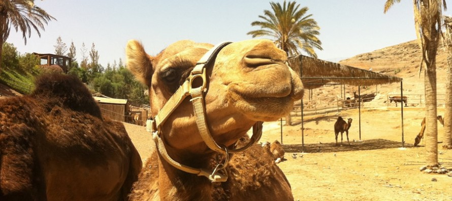

Ubicación y Que Puedes Realizar |
|
|---|---|
Breve Historia
de Marrakech
Ciudad Marrakech |
Saliendo de Marrakech en dirección al Atlas, por la carretera de Ourika, a 30 km se encuentra AGHMAT, una ciudad construida por los bereberes almorávides antes de la conquista islámica del Magreb y zona de paso de las rutas que cruzaban la cordillera. Aghmat sirvió como base para los almorávides en su avance hacia el norte y para la creación de una nueva ciudad en las faldas del Atlas: Marrakech. |
Ascensión al Yebel Toubkal Ciudad Tangier |
Se encuentra en el Parque Nacional de igual nombre, situado en la parte occidental del Atlas Marroquí, cordillera formada en la era terciaria por la colisión de las placas euroasiática y africana, situada entre el Océano Atlántico y el desierto del Sahara. La subida a este monte está bien organizada por los guías locales, que proporcionan todo lo necesario para la subida. Se suele hacer en dos días pernoctando en refugios de montaña o en tiendas de campaña. Hay que evitar la época fría y los días con mal tiempo. La época ideal es de Mayo a Octubre |
Valle de Ourika Ciudad Odjua |
Se encuentra a cuarenta kilómetros de Marrakech, un oasis de verdor entre altas montañas, una excursión que combina el descubrimiento de una exuberante naturaleza y un estilo de vida tradicional, con sus viviendas, artesanía y los recursos naturales locales. Dos impresionantes valles, de los ríos Ourika y Lekad, nos lleva hasta los pies de las grandes montañas del Alto Atlas. Este valle es especialmente bello de febrero a Abri,l cuando florecen los almendros, cerezos y las flores silvestres, siendo en verano un refugio para combatir los calores de la capital, por lo que hay numerosos turistas locales. |
Paseos en camello  Ciudad Majorelle |
paseo en camello por al palmeral de Majorelle .Con sus 13.000 hectáreas y sus más de 100.000 palmeras, es un maravilloso espacio verde de oasis, que se remonta siglos atrás y que permite ver estampas de un Marruecos rural alejado del bullicio de la ciudad. |
Festival Internacional de Asilah Ciudad Asilah |
comprometido social, no comercial de diferentes países del mundo, muy interesante para los amantes del séptimo arte. Una forma diferente de hacer turismo en Marruecos. |
Cascada de Odjua Ciudad de odjua |
Disfruta de unas vistas espectaculares mientras contemplas estas cascadas de 110 metros. No te olvides de buscar a los monos autóctonos. |


 Inicio
Inicio